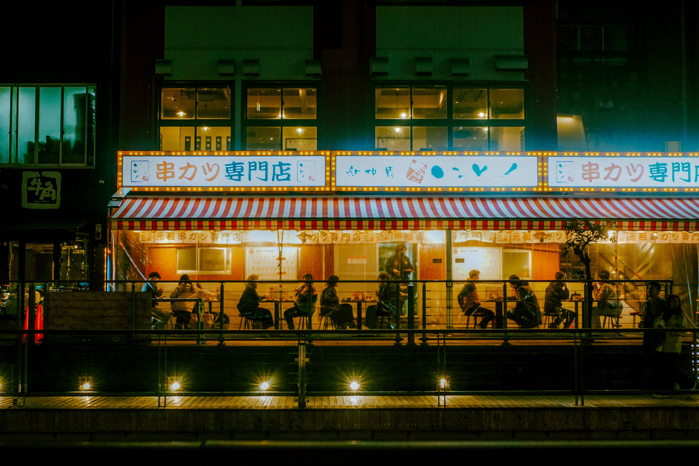
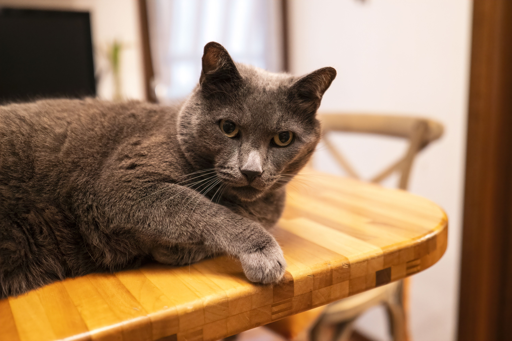
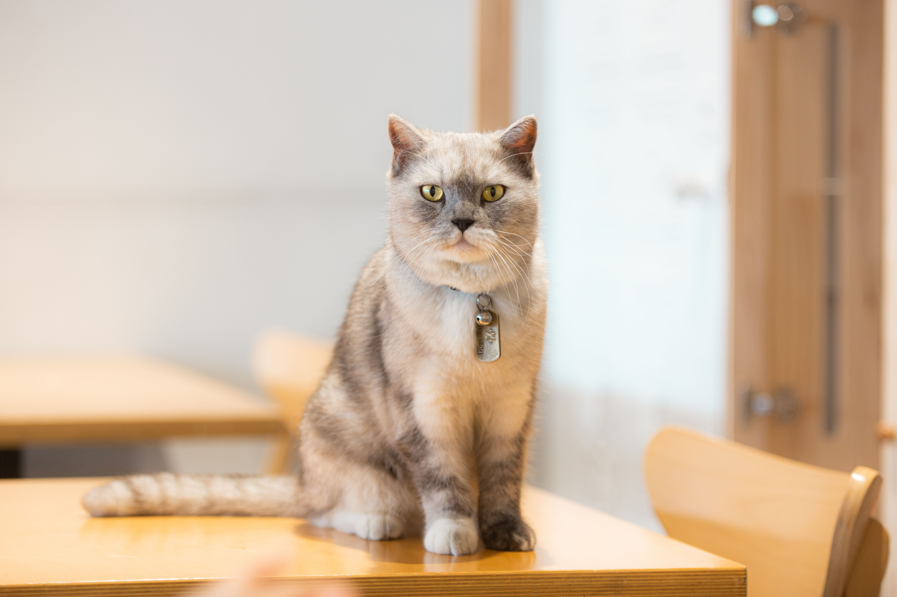
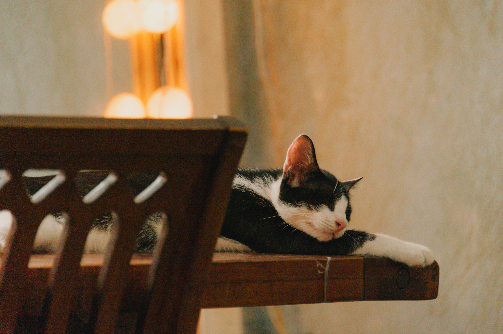

Sobre Neko Coffee

Nuestra historia
Neko Coffee nació de un viaje a Kioto y de una tarde lluviosa pasada en un pequeño kissaten escondido entre callejones. Ese lugar, silencioso y cálido, con un gato durmiendo junto a la ventana, se convirtió en la inspiración para crear un espacio similar en casa.
Desde 2023 abrimos nuestras puertas con la misión de traer esa misma calma: café y té preparados con dedicación, recetas japonesas tradicionales y la compañía de nuestros gatos residentes.
Nuestra misión
Ofrecer un espacio de pausa dentro de la rutina diaria, sirviendo bebidas y postres de calidad inspirados en la cultura japonesa, en un ambiente cálido, tranquilo y amigable con los animales.
Nuestros gatos residentes
Mochi, Sora y Kuro viven en la cafetería y son parte fundamental de la experiencia Neko Coffee. Cada uno tiene su propia personalidad y rincón favorito de la casa.



Nuestros valores
- Calidad artesanal en cada bebida y postre
- Respeto por la tradición japonesa del té y el café
- Bienestar animal y espacios amigables con los gatos
- Comunidad y tranquilidad por encima de la prisa